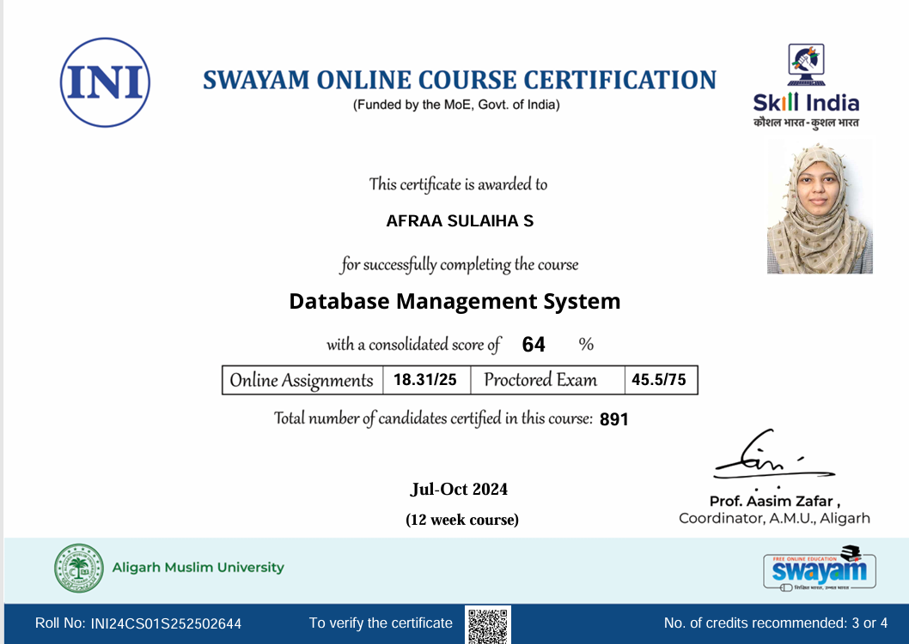
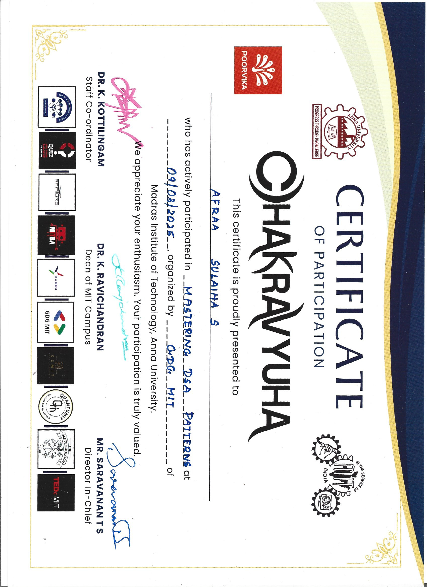
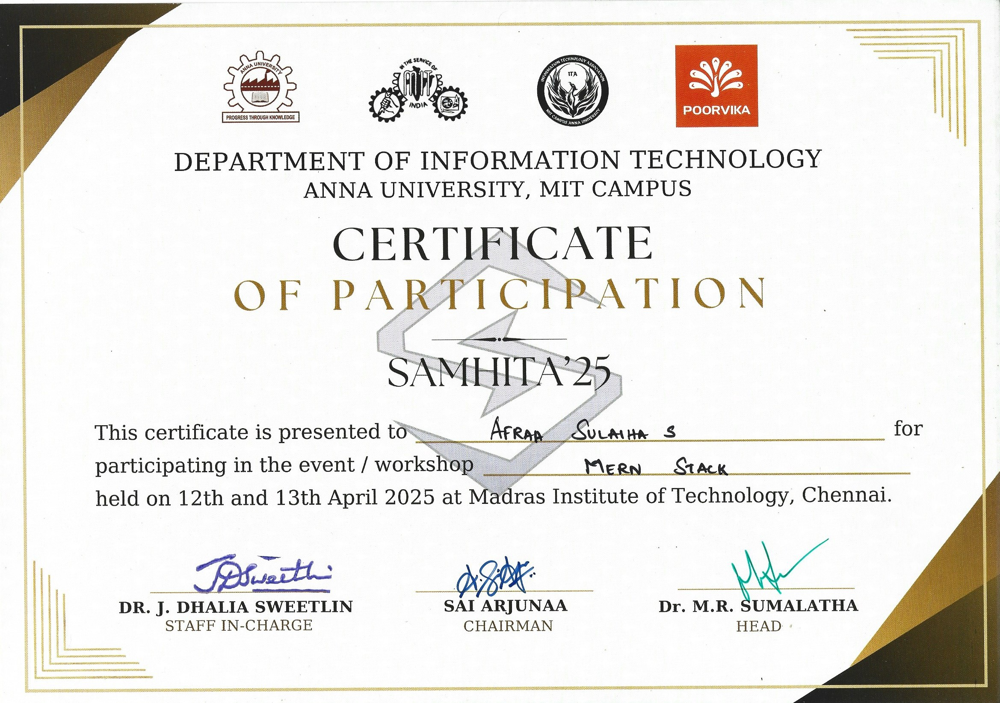

Online Courses
1. MATLAB Onramp
Issued by: MathWorks

An introductory hands-on course that covered the basics of MATLAB programming, including variables, scripts, functions, and data visualization, with real-time practice exercises.
2. Introduction to Linear Algebra using MATLAB
Issued by: MathWorks

Learned core linear algebra concepts such as vectors, matrices, linear equations, and transformations using MATLAB for practical implementation and visualization.
3. Artificial Intelligence Fundamentals
Issued by: IBM SkillsBuild

Completed IBM’s Artificial Intelligence Fundamentals course, gaining foundational knowledge in AI concepts, applications, and ethical considerations.
4. Data Analytics Job Simulation
Issued by: Deloitte (Forage)

Completed Deloitte’s Data Analytics virtual simulation, applying data analysis and forensic technology skills to solve real-world business problems.
5. Data Visualisation: Empowering Business with Effective Insights
Issued by: Tata (Forage)

Learned data visualization techniques by completing a virtual simulation with Tata Group, creating insights-driven visuals, preparing client-focused questions, and supporting executive decision-making.
NPTEL Courses
1. Database Management System
Issued by: SWAYAM Online Course
A 12 week, NPTEL course offered by Aligarh Muslim University, on Database Management Systems, which covered the SQL and NOSQL databases.
2. German I
Issued by: SWAYAM Online Course
A 12 week, NPTEL course offered by IIT Madras, on the German language which only covers the basic language.
3. Design Thinking - A Primer
Issued by: SWAYAM Online Course
A 4 week, NPTEL course offered by IIT Madras, which covered the basics of product designing and the others involving it.
Workshops
1. Mastering DSA Patterns
Issued by: GDG MIT
A workshop conducted by the Google Developer Groups of MIT, which covered the important concepts of Data Structure and how to approach the problems.
2. Mern Stack
Issued by: SAMHITA MIT
A hands - on workshop conducted by the SAMHITA from IT association of MIT, which covered the important concepts of MERN Stack, based on real life problems